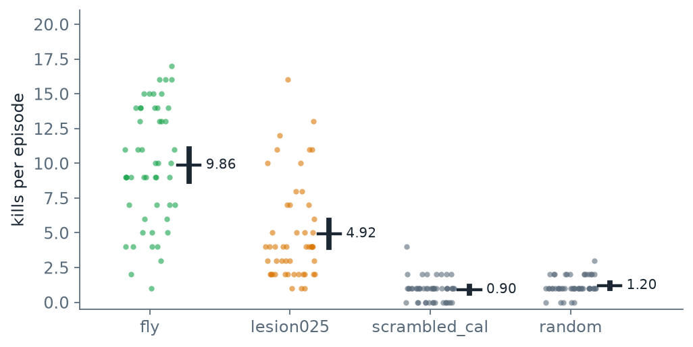
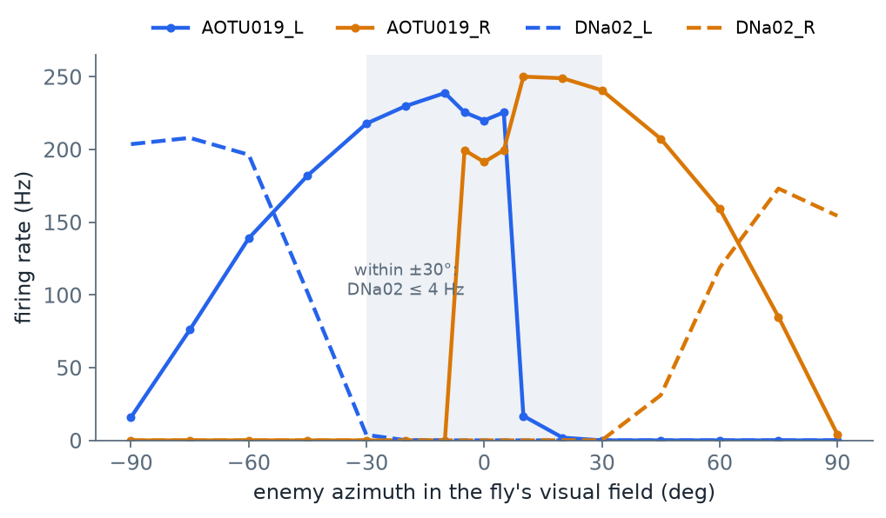

PART 4
重現成功只代表「照作者的做法會得到作者的數字」。這一頁改動做法本身：加大樣本、換一種對照、改讀別的神經元
每一項都只改參數、對照組或讀法，不改作者的模型；程式在下載包的 fruitfly_lab/ext/，結果另存，不覆蓋重現的輸出。代號 E1–E4 是本課自己編的。每一節照同一個順序寫：作者原本怎麼說、我們懷疑哪裡不夠、怎麼檢、怎樣算過、結果、結論能說到哪裡為止。
| 代號 | 問的問題 | 結果 | 對作者的結論有什麼影響 |
|---|---|---|---|
| E1 | 10 局夠不夠分辨損毀 AOTU025 的效果 | 50 局：9.86 對 4.92，p < 0.0001 | 支持；作者的 p = 0.048 只是勉強過線，50 局的 p < 0.0001 幾乎不可能是運氣 |
| E2 | 打亂接線輸，是不是只因為閾值不合 | 10 種打亂各自校準：50 局平均擊殺 1.16，完整接線 9.86 | 支持：各自校準之後仍遠低於完整接線 |
| E3 | 只讀下行神經元 DNa02，還打得到嗎 | 完整迴路的平均擊殺只剩 0.68，低於隨機按鍵的 1.2 | 改寫：正前方的瞄準完全靠 AOTU019 |
| E4 | 右眼的子圖反應為什麼只有全腦的十幾分之一 | 直接輸入都在子圖內；差異來自子圖內部 | 作者沒討論；不影響遊戲結果 |
每一列的數字出處見下面對應的小節。
作者的說法：損毀 AOTU025 這對神經元會讓果蠅打得變差。證據是每個條件 10 局，完整接線對損毀 AOTU025 的 p = 0.048（p 值的意思與算法見 PART 3 第 7 節），剛好低於 0.05 的慣例門檻。
懷疑：10 局太少。PART 3 第 8 節也看到 10 局的平均會隨遊戲的隨機抽樣大幅移動；p 剛好擦過門檻，換一批局就可能翻過去。
檢法：把種子 0–49 全部跑一次。種子是遊戲亂數的起點，同一個種子敵人出現的位置與順序就相同；作者那 10 局就是種子 0–9，所以這 50 局包含作者的 10 局再加 40 局。怎樣算過：50 局的 p 仍要小於 0.05，差距才算站得住。

scripts/make_figures.py 從 out/fruitfly/ext_vizdoom1.3.0/E1.json 畫出。| 條件 | ViZDoom 1.3.0：平均（95% 信賴區間） | ViZDoom 1.3.2：平均（95% 信賴區間） |
|---|---|---|
fly（完整接線） | 9.86（8.68–11.04） | 7.92（6.42–9.42） |
lesion025（損毀 AOTU025） | 4.92（3.94–5.9） | 3.92（3.08–4.76） |
scrambled_cal（打亂接線，作者的設定：每局不同打亂、閾值只在第 100 號打亂上校準） | 0.9（0.68–1.12） | 1.0（0.79–1.21） |
random（隨機按鍵） | 1.2（1.02–1.38） | 1.2（1.02–1.38） |
兩個版本的結果在 out/fruitfly/ext_vizdoom1.3.0/E1.json 與 ext_vizdoom1.3.2/E1.json，由 ext/ff_extra.py 算出。random 在兩版的 50 局逐局完全相同，連每局存活的格數都相同：它不讀敵人位置、也不經過迴路，所以遊戲本身在兩版跑得一樣；會變的只有讀敵人位置的條件（fly、lesion025、scrambled_cal，以及 PART 3 第 8 節的 oracle）。兩版的差異出在遊戲回報敵人位置的方式，不在敵人出現的時間。
結果：50 局時，完整接線 9.86 對損毀 AOTU025 的 4.92，p 小於 0.0001；對另外兩個條件也一樣，兩個遊戲版本都如此。「小於 0.0001」是這個算法給得出的最小值：p 用 20,000 次隨機洗牌估計（PART 3 第 7 節），20,000 次裡一次都沒有出現比真實差距更大的情況時，p 就記成 1 ÷ 20,001，所以寫成小於 0.0001。只取前 10 局重算，p = 0.047；作者是 0.048，兩者都是 20,000 次洗牌的估計值，洗牌抽到的序列不同就差這一點，說的是同一個勉強過線的數字。
結論：損毀 AOTU025 會降分這個結論是穩的，只是作者的樣本太小，看不出它有多穩。能說的到這裡為止：遊戲版本仍然影響絕對分數，完整接線在 1.3.2 下是 7.92，比 1.3.0 低，所以「平均殺幾個」不能跨版本比，只能比條件之間的高低。
作者的說法：打亂接線的果蠅打得比完整接線差很多（PART 3 第 7 節：10 局平均 0.7 對 10.2），所以是真實的接線在做事。打亂接線（scrambled）的做法：每條連結的起點與強度不變，終點全部隨機重排，所以每顆神經元送出與收到的連結數都和原本一樣，只是「連到誰」變了。
懷疑：閾值不合。閾值是校準出來的（PART 1 第 4 節）：拿一套接線、把假想敵人放在 17 個方位、量它的反應，再訂轉向與開火的門檻。門檻是為那一套接線量的；換一套接線，放電率的尺度不同，同一個門檻就可能太高（永遠不開火）或太低（亂開火）。讀作者的程式可以看到，scrambled_cal 每一局用的是不同的打亂：打亂的方式由一個編號決定，同一個編號永遠得到同一種重排（和種子的作用一樣），作者的程式拿「遊戲種子 + 100」當編號，所以第 0 局用第 100 號、第 1 局用第 101 號……但閾值只在第 100 號打亂上校準一次，再套用到所有局。所以其他九局的閾值不是為它們自己的迴路校準的——打亂接線輸，可能有一部分是因為閾值不合。
檢法：十種打亂（第 100–109 號）每一種都用自己的迴路校準出自己的閾值，再各玩 5 局，共 50 局。怎樣算過：各自校準之後平均擊殺若仍遠低於完整接線的 9.86，閾值就不是輸的原因。
| 打亂編號 | 轉向閾值 | 開火閾值 | 5 局擊殺 |
|---|---|---|---|
| 100 | 40.46 | 8.44 | 1 1 1 1 2 |
| 101 | 47.58 | 5.23 | 1 1 1 2 2 |
| 102 | 88.86 | 1.0 | 0 2 0 0 1 |
| 103 | 48.72 | 1.0 | 1 0 0 1 1 |
| 104 | 89.55 | 1.0 | 1 1 2 1 1 |
| 105 | 13.08 | 1.0 | 1 1 1 0 2 |
| 106 | 20.51 | 4.31 | 1 1 1 0 1 |
| 107 | 30.94 | 12.13 | 1 3 1 2 1 |
| 108 | 30.96 | 18.99 | 1 3 1 2 2 |
| 109 | 68.43 | 3.2 | 2 1 2 1 1 |
輸出在 out/fruitfly/ext_vizdoom1.3.0/E2.json。兩個閾值的單位都是 Hz（轉向訊號是放電率相減再相加，仍是 Hz）。開火閾值 1.0 是校準規則（PART 1 第 4 節）寫死的下限：規則是「0° 時兩側 AOTU019 較小者的一半」，若正前方兩側幾乎不放電，一半會接近 0，開火條件就永遠成立，所以程式規定至少 1.0 Hz。表上開火閾值是 1.0 的那幾種打亂，正是正前方幾乎沒有反應的。
結果：50 局平均 1.16（95% 信賴區間 0.96–1.36），比作者設定下的成績（E1 表的 0.9；作者自己 10 局的 0.7）高一些，所以各自校準有一點幫助；但和完整接線的 9.86 差了八倍以上，仍在隨機按鍵（1.2）的水準。表裡各種打亂校準出來的閾值差很多（轉向從 13.08 到 89.55），正說明各自校準有必要，但校準之後成績還是上不去。結論：打亂接線輸，主因不是閾值不合。
作者的說法：lesion 條件（同時損毀 AOTU019 與 AOTU025）拿 0 分，代表這條迴路在瞄準。
懷疑：作者的開火規則本身就是讀 AOTU019 的放電（PART 1 第 4 節：左右 AOTU019 都超過閾值才開火）。損毀 AOTU019，等於把開火鍵拔掉，拿 0 分不奇怪；這分不出是「迴路受損」還是「讀出被拿掉」。
檢法：換一種只讀下行神經元的讀法。下行神經元是腦送訊號到身體的出口（PART 1 第 3 節）；如果迴路真的在算瞄準，答案應該會出現在出口。新讀法：轉向 ＝ DNa02 右減左；兩側 DNa02 都超過閾值就開火。閾值用同樣的校準流程重新決定。怎樣算過：完整迴路用這個讀法若還能明顯高於隨機按鍵（1.2），表示瞄準訊號確實到了下行神經元。
結果：連完整迴路都只剩平均 0.68（50 局，95% 信賴區間 0.47–0.89），低於隨機按鍵的 1.2；再損毀 AOTU019，同一個讀法反而是 1.72（1.39–2.05），兩者的差 p < 0.0001，不是運氣，但 1.72 仍只有完整接線 9.86 的六分之一，為什麼損毀後略高，本課沒有追。重點是完整迴路用這個讀法連隨機按鍵都不如。為什麼？校準時兩個閾值都掉到規則（PART 1 第 4 節）的下限 1.0，因為敵人在 0° 與 ±10° 時，兩側 DNa02 都是 0 Hz：敵人就在正前方，出口卻完全安靜。看完整的校準曲線：

scripts/make_figures.py 從 out/fruitfly/local_doom_vizdoom130/calibration_fly.json 畫出（與作者附的校準檔逐位相同，見 PART 3 第 6 節）。這張圖說明了遊戲裡發生的事：
lesion025 降分。結論：AOTU019 直接接收 LC10a 的輸入（PART 1 圖 1），也就是視覺輸入之後只隔一個突觸。所以完整迴路在打中敵人的那一段，讀的是迴路很前端的活動，不是腦送往身體的下行訊號。作者在 README 寫了讀出加上 AOTU019 的理由（子圖裡 DNa02 沒有基線活動，也就是沒有刺激時完全不放電），E3 新加的不是這個理由，而是量出它的後果：正前方的瞄準與開火，完全不經過下行神經元。
PART 3 第 5 節的驗證裡，刺激右眼時子圖的 DNa02 右只有 4.4 Hz，全腦卻有 61.6 Hz，差了十幾倍。這不是作者宣稱的結果，是重現時看到、作者沒討論的現象。猜測：切子圖時（PART 1 第 3 節的切法）把 DNa02 右的某些輸入切掉了。E4 分兩步檢查這個猜測。
第一步：輸入是不是被切掉了？在全腦模擬裡，把 DNa02 右的每一個上游神經元算成「放電率 × 帶正負號的突觸數」（興奮性連結取正、抑制性取負），叫它對 DNa02 右的驅動量：正代表推它放電，負代表壓它。這個量沒有物理單位，只用來比大小。來自子圖內的驅動量加總是 20,501.8，來自子圖外的只有 −84.4。直接輸入幾乎全在子圖裡，猜測不成立。
第二步：那差在哪裡？比較同一批上游神經元在「子圖模擬」與「全腦模擬」裡的放電率，差最多的幾顆：
| 神經元 | 對 DNa02 右的帶正負號的突觸數 | 全腦（Hz） | 子圖（Hz） |
|---|---|---|---|
| PS049_R | −378 | 89.8 | 115.2 |
| AOTU025_R | 154 | 121.0 | 61.2 |
| LAL018_R | 185 | 36.6 | 1.6 |
| PS013_R | 162 | 108.6 | 133.8 |
| DNg75_R | 70 | 34.4 | 6.8 |
| DNa06_R | 59 | 79.8 | 48.8 |
由 ext/e4_asymmetry.py 算出，輸出在 out/fruitfly/E4_asymmetry.json。全腦模擬沒有固定亂數種子（這是 Shiu 等人程式的設定，本課不改作者的程式），重跑時這些放電率會有幾個百分比的浮動；這影響不到 4.4 對 61.6 這種十幾倍的落差。
在子圖裡，興奮 DNa02 右的 AOTU025_R 只剩全腦的一半，抑制它的 PS049_R 反而更活躍。這些神經元本身都在子圖內，它們的活動改變，是因為子圖外送給它們的輸入被切掉了，整個子圖內部的興奮與抑制平衡跟著改變。落差來自子圖內部的網路效應，不是少了某一條直接連結。網路效應的意思：少的不是直接連到 DNa02 右的線，而是上游神經元自己的輸入少了，連帶改變它們送給 DNa02 右的量。哪一條外部輸入是關鍵，要把子圖外的神經元逐一加回去才能確定，本課沒有做。
右側反應弱，最直接的後果應該是敵人在右邊時轉錯方向。作者的統計程式 doom/analyze.py 剛好算了「轉錯方向」的比例（敵人在左卻右轉，或反過來），在完整接線第 0 局的 481 格逐格紀錄裡是 0%（out/fruitfly/local_doom_vizdoom130/analysis.json 的 turn_wrong_pct）。這只是一局的證據（E1 才說過 10 局都嫌少），只能說這一局裡沒看到轉錯方向；要確定對遊戲結果的影響，得跑更多局，本課沒有做。但它提醒一件事：子圖是全腦的近似，左右兩側的近似程度可以差很多。